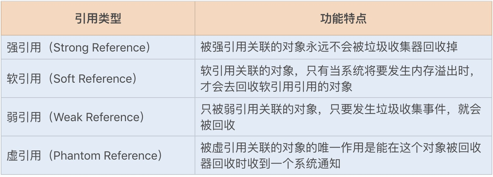

Java性能调优4
Contents
1. 了解JVM内存结构
1.1 为什么 JVM 在 Java 中如此重要？
首先你应该知道，运行一个 Java 应用程序，我们必须要先安装 JDK 或者 JRE 包。这是因为 Java 应用在编译后会变成字节码，然后通过字节码运行在 JVM 中，而 JVM 是 JRE 的核心组成部分。
JVM 不仅承担了 Java 字节码的分析（JIT compiler）和执行（Runtime），同时也内置了自动内存分配管理机制。这个机制可以大大降低手动分配回收机制可能带来的内存泄露和内存溢出风险，使 Java 开发人员不需要关注每个对象的内存分配以及回收，从而更专注于业务本身。
1.2 从了解内存结构开始
VM 自动内存分配管理机制的好处很多，但实则是把双刃剑。这个机制在提升 Java 开发效率的同时，也容易使 Java 开发人员过度依赖于自动化，弱化对内存的管理能力，这样系统就很容易发生 JVM 的堆内存异常，垃圾回收（GC）的方式不合适以及 GC 次数过于频繁等问题，这些都将直接影响到应用服务的性能。
因此，要进行 JVM 层面的调优，就需要深入了解 JVM 内存分配和回收原理，这样在遇到问题时，我们才能通过日志分析快速地定位问题；也能在系统遇到性能瓶颈时，通过分析 JVM 调优来优化系统性能。这也是整个模块四的重点内容，今天我们就从 JVM 的内存模型学起，为后续的学习打下一个坚实的基础。
1.3 JVM 内存结构的具体设计
我们先通过一张 JVM 内存模型图，来熟悉下其具体设计。在 Java 中，JVM 内存模型主要分为：
- 堆
- 程序计数器
- 方法区
- 虚拟机栈
- 本地方法栈

- 堆（Heap）
堆是 JVM 内存中最大的一块内存空间，该内存被所有线程共享，几乎所有对象和数组都被分配到了堆内存中。堆被划分为新生代和老年代，新生代又被进一步划分为 Eden 和 Survivor 区，最后 Survivor 由 From Survivor 和 To Survivor 组成。
在 Java6 版本中，永久代在非堆内存区；到了 Java7 版本，永久代的静态变量和运行时常量池被合并到了堆中；而到了 Java8，永久代被元空间取代了。 结构如下图所示：

- 程序计数器（Program Counter Register）
程序计数器是一块很小的内存空间，主要用来记录各个线程执行的字节码的地址，例如，分支、循环、跳转、异常、线程恢复等都依赖于计数器。
由于 Java 是多线程语言，当执行的线程数量超过 CPU 数量时，线程之间会根据时间片轮询争夺 CPU 资源。如果一个线程的时间片用完了，或者是其它原因导致这个线程的 CPU 资源被提前抢夺，那么这个退出的线程就需要单独的一个程序计数器，来记录下一条运行的指令。
- 方法区（Method Area）
很多开发者都习惯将方法区称为“永久代”，其实这两者并不是等价的。
HotSpot 虚拟机使用永久代来实现方法区，但在其它虚拟机中，例如，Oracle 的 JRockit、IBM 的 J9 就不存在永久代一说。因此，方法区只是 JVM 中规范的一部分，可以说，在 HotSpot 虚拟机中，设计人员使用了永久代来实现了 JVM 规范的方法区。
方法区主要是用来存放已被虚拟机加载的类相关信息，包括类信息、运行时常量池、字符串常量池。类信息又包括了类的版本、字段、方法、接口和父类等信息。
JVM 在执行某个类的时候，必须经过加载、连接、初始化，而连接又包括验证、准备、解析三个阶段。在加载类的时候，JVM 会先加载 class 文件，而在 class 文件中除了有类的版本、字段、方法和接口等描述信息外，还有一项信息是常量池 (Constant Pool Table)，用于存放编译期间生成的各种字面量和符号引用。
字面量包括字符串（String a=“b”）、基本类型的常量（final 修饰的变量），符号引用则包括类和方法的全限定名（例如 String 这个类，它的全限定名就是 Java/lang/String）、字段的名称和描述符以及方法的名称和描述符。
而当类加载到内存中后，JVM 就会将 class 文件常量池中的内容存放到运行时的常量池中；在解析阶段，JVM 会把符号引用替换为直接引用（对象的索引值）。
例如，类中的一个字符串常量在 class 文件中时，存放在 class 文件常量池中的；在 JVM 加载完类之后，JVM 会将这个字符串常量放到运行时常量池中，并在解析阶段，指定该字符串对象的索引值。运行时常量池是全局共享的，多个类共用一个运行时常量池，class 文件中常量池多个相同的字符串在运行时常量池只会存在一份。
方法区与堆空间类似，也是一个共享内存区，所以方法区是线程共享的。假如两个线程都试图访问方法区中的同一个类信息，而这个类还没有装入 JVM，那么此时就只允许一个线程去加载它，另一个线程必须等待。
Java8 为什么使用元空间替代永久代，这样做有什么好处呢？ 官方给出的解释是：
-
移除永久代是为了融合 HotSpot JVM 与 JRockit VM 而做出的努力，因为 JRockit 没有永久代，所以不需要配置永久代。
-
永久代内存经常不够用或发生内存溢出，爆出异常 java.lang.OutOfMemoryError: PermGen。这是因为在 JDK1.7 版本中，指定的 PermGen 区大小为 8M，由于PermGen 中类的元数据信息在每次 FullGC 的时候都可能被收集，回收率都偏低，成绩很难令人满意；还有，为 PermGen 分配多大的空间很难确定，PermSize 的大小依赖于很多因素，比如，JVM 加载的 class 总数、常量池的大小和方法的大小等。
- 虚拟机栈（VM stack）
Java 虚拟机栈是线程私有的内存空间，它和 Java 线程一起创建。当创建一个线程时，会在虚拟机栈中申请一个线程栈，用来保存方法的局部变量、操作数栈、动态链接方法和返回地址等信息，并参与方法的调用和返回。每一个方法的调用都伴随着栈帧的入栈操作，方法的返回则是栈帧的出栈操作。
- 本地方法栈（Native Method Stack） 本地方法栈跟 Java 虚拟机栈的功能类似，Java 虚拟机栈用于管理 Java 函数的调用，而本地方法栈则用于管理本地方法的调用。但本地方法并不是用 Java 实现的，而是由 C 语言实现的。
2. 深入JVM即时编译器JIT，优化Java编译
说到编译，我猜你一定会想到 .java 文件被编译成 .class 文件的过程，这个编译我们一般称为前端编译。Java 的编译和运行过程非常复杂，除了前端编译，还有运行时编译。由于机器无法直接运行 Java 生成的字节码，所以在运行时，JIT 或解释器会将字节码转换成机器码，这个过程就叫运行时编译。
类文件在运行时被进一步编译，它们可以变成高度优化的机器代码，由于 C/C++ 编译器的所有优化都是在编译期间完成的，运行期间的性能监控仅作为基础的优化措施则无法进行，例如，调用频率预测、分支频率预测、裁剪未被选择的分支等，而 Java 在运行时的再次编译，就可以进行基础的优化措施。因此，JIT 编译器可以说是 JVM 中运行时编译最重要的部分之一。
2.1 类编译加载执行过程
在这之前，我们先了解下 Java 从编译到运行的整个过程，为后面的学习打下基础。请看下图：
2.2 类编译
在编写好代码之后，我们需要将 .java 文件编译成 .class 文件，才能在虚拟机上正常运行代码。文件的编译通常是由 JDK 中自带的 Javac 工具完成，一个简单的 .java 文件，我们可以通过 javac 命令来生成 .class 文件。
编译后的字节码文件主要包括常量池和方法表集合这两部分。
常量池主要记录的是类文件中出现的字面量以及符号引用。字面常量包括字符串常量（例如 String str=“abc”，其中"abc"就是常量），声明为 final 的属性以及一些基本类型（例如，范围在 -127-128 之间的整型）的属性。符号引用包括类和接口的全限定名、类引用、方法引用以及成员变量引用（例如 String str=“abc”，其中 str 就是成员变量引用）等。
方法表集合中主要包含一些方法的字节码、方法访问权限（public、protect、prviate 等）、方法名索引（与常量池中的方法引用对应）、描述符索引、JVM 执行指令以及属性集合等。
2.3 类加载
当一个类被创建实例或者被其它对象引用时，虚拟机在没有加载过该类的情况下，会通过类加载器将字节码文件加载到内存中。
不同的实现类由不同的类加载器加载，JDK 中的本地方法类一般由根加载器（Bootstrp loader）加载进来，JDK 中内部实现的扩展类一般由扩展加载器（ExtClassLoader ）实现加载，而程序中的类文件则由系统加载器（AppClassLoader ）实现加载。
在类加载后，class 类文件中的常量池信息以及其它数据会被保存到 JVM 内存的方法区中。
2.4 类连接
类在加载进来之后，会进行连接、初始化，最后才会被使用。在连接过程中，又包括验证、准备和解析三个部分。
验证：验证类符合 Java 规范和 JVM 规范，在保证符合规范的前提下，避免危害虚拟机安全。
准备：为类的静态变量分配内存，初始化为系统的初始值。对于 final static 修饰的变量，直接赋值为用户的定义值。例如，private final static int value=123，会在准备阶段分配内存，并初始化值为 123，而如果是 private static int value=123，这个阶段 value 的值仍然为 0。
解析：将符号引用转为直接引用的过程。我们知道，在编译时，Java 类并不知道所引用的类的实际地址，因此只能使用符号引用来代替。类结构文件的常量池中存储了符号引用，包括类和接口的全限定名、类引用、方法引用以及成员变量引用等。如果要使用这些类和方法，就需要把它们转化为 JVM 可以直接获取的内存地址或指针，即直接引用。
2.5 类初始化
类初始化阶段是类加载过程的最后阶段，在这个阶段中，JVM 首先将执行构造器
初始化类的静态变量和静态代码块为用户自定义的值，初始化的顺序和 Java 源码从上到下的顺序一致。例如：
|
|
此时运行结果为：
0
再来看看以下代码：
|
|
此时运行结果为：
1
JVM 会保证
JVM 在初始化执行代码时，如果实例化一个新对象，会调用
2.6 即时编译
初始化完成后，类在调用执行过程中，执行引擎会把字节码转为机器码，然后在操作系统中才能执行。在字节码转换为机器码的过程中，虚拟机中还存在着一道编译，那就是即时编译。
最初，虚拟机中的字节码是由解释器（ Interpreter ）完成编译的，当虚拟机发现某个方法或代码块的运行特别频繁的时候，就会把这些代码认定为“热点代码”。
为了提高热点代码的执行效率，在运行时，即时编译器（JIT）会把这些代码编译成与本地平台相关的机器码，并进行各层次的优化，然后保存到内存中。
3. 如何优化垃圾回收机制？
我们知道，在 Java 开发中，开发人员是无需过度关注对象的回收与释放的，JVM 的垃圾回收机制可以减轻不少工作量。但完全交由 JVM 回收对象，也会增加回收性能的不确定性。在一些特殊的业务场景下，不合适的垃圾回收算法以及策略，都有可能导致系统性能下降。
面对不同的业务场景，垃圾回收的调优策略也不一样。例如，在对内存要求苛刻的情况下，需要提高对象的回收效率；在 CPU 使用率高的情况下，需要降低高并发时垃圾回收的频率。可以说，垃圾回收的调优是一项必备技能。
3.1 垃圾回收机制
掌握 GC 算法之前，我们需要先弄清楚 3 个问题。第一，回收发生在哪里？第二，对象在什么时候可以被回收？第三，如何回收这些对象？
- 回收发生在哪里？
JVM 的内存区域中，程序计数器、虚拟机栈和本地方法栈这 3 个区域是线程私有的，随着线程的创建而创建，销毁而销毁；栈中的栈帧随着方法的进入和退出进行入栈和出栈操作，每个栈帧中分配多少内存基本是在类结构确定下来的时候就已知的，因此这三个区域的内存分配和回收都具有确定性。
那么垃圾回收的重点就是关注堆和方法区中的内存了，堆中的回收主要是对象的回收，方法区的回收主要是废弃常量和无用的类的回收。
- 对象在什么时候可以被回收？
那 JVM 又是怎样判断一个对象是可以被回收的呢？一般一个对象不再被引用，就代表该对象可以被回收。目前有以下两种算法可以判断该对象是否可以被回收。
引用计数算法：这种算法是通过一个对象的引用计数器来判断该对象是否被引用了。每当对象被引用，引用计数器就会加 1；每当引用失效，计数器就会减 1。当对象的引用计数器的值为 0 时，就说明该对象不再被引用，可以被回收了。这里强调一点，虽然引用计数算法的实现简单，判断效率也很高，但它存在着对象之间相互循环引用的问题。
可达性分析算法：GC Roots 是该算法的基础，GC Roots 是所有对象的根对象，在 JVM 加载时，会创建一些普通对象引用正常对象。这些对象作为正常对象的起始点，在垃圾回收时，会从这些 GC Roots 开始向下搜索，当一个对象到 GC Roots 没有任何引用链相连时，就证明此对象是不可用的。目前 HotSpot 虚拟机采用的就是这种算法。
以上两种算法都是通过引用来判断对象是否可以被回收。在 JDK 1.2 之后，Java 对引用的概念进行了扩充，将引用分为了以下四种：

- 如何回收这些对象？
了解完 Java 程序中对象的回收条件，那么垃圾回收线程又是如何回收这些对象的呢？JVM 垃圾回收遵循以下两个特性。
自动性：Java 提供了一个系统级的线程来跟踪每一块分配出去的内存空间，当 JVM 处于空闲循环时，垃圾收集器线程会自动检查每一块分配出去的内存空间，然后自动回收每一块空闲的内存块。
不可预期性：一旦一个对象没有被引用了，该对象是否立刻被回收呢？答案是不可预期的。我们很难确定一个没有被引用的对象是不是会被立刻回收掉，因为有可能当程序结束后，这个对象仍在内存中。
垃圾回收线程在 JVM 中是自动执行的，Java 程序无法强制执行。我们唯一能做的就是通过调用 System.gc 方法来"建议"执行垃圾收集器，但是否可执行，什么时候执行？仍然不可预期。
3.2 GC 算法
JVM 提供了不同的回收算法来实现这一套回收机制，通常垃圾收集器的回收算法可以分为以下几种：

如果说收集算法是内存回收的方法论，那么垃圾收集器就是内存回收的具体实现，JDK1.7 update14 之后 Hotspot 虚拟机所有的回收器整理如下（以下为服务端垃圾收集器）：
其实在 JVM 规范中并没有明确 GC 的运作方式，各个厂商可以采用不同的方式实现垃圾收集器。我们可以通过 JVM 工具查询当前 JVM 使用的垃圾收集器类型，首先通过 ps 命令查询出进程 ID，再通过 jmap -heap ID 查询出 JVM 的配置信息，其中就包括垃圾收集器的设置类型。
3.3 GC 性能衡量指标
一个垃圾收集器在不同场景下表现出的性能也不一样，那么如何评价一个垃圾收集器的性能好坏呢？我们可以借助一些指标。
吞吐量：这里的吞吐量是指应用程序所花费的时间和系统总运行时间的比值。我们可以按照这个公式来计算 GC 的吞吐量：系统总运行时间 = 应用程序耗时 +GC 耗时。如果系统运行了 100 分钟，GC 耗时 1 分钟，则系统吞吐量为 99%。GC 的吞吐量一般不能低于 95%。
停顿时间：指垃圾收集器正在运行时，应用程序的暂停时间。对于串行回收器而言，停顿时间可能会比较长；而使用并发回收器，由于垃圾收集器和应用程序交替运行，程序的停顿时间就会变短，但其效率很可能不如独占垃圾收集器，系统的吞吐量也很可能会降低。
垃圾回收频率：多久发生一次指垃圾回收呢？通常垃圾回收的频率越低越好，增大堆内存空间可以有效降低垃圾回收发生的频率，但同时也意味着堆积的回收对象越多，最终也会增加回收时的停顿时间。所以我们只要适当地增大堆内存空间，保证正常的垃圾回收频率即可。
3.4 查看 & 分析 GC 日志
已知了性能衡量指标，现在我们需要通过工具查询 GC 相关日志，统计各项指标的信息。首先，我们需要通过 JVM 参数预先设置 GC 日志，通常有以下几种 JVM 参数设置：
|
|
这里使用如下参数来打印日志：
|
|
打印后的日志为：
上图是运行很短时间的 GC 日志，如果是长时间的 GC 日志，我们很难通过文本形式去查看整体的 GC 性能。
这里我再推荐一个比较好用的 GC 日志分析工具，GCeasy是一款非常直观的 GC 日志分析工具，我们可以将日志文件压缩之后，上传到 GCeasy 官网即可看到非常清楚的 GC 日志分析结果。
3.5 GC 调优策略
找出问题后，就可以进行调优了，下面介绍几种常用的 GC 调优策略。
- 降低 Minor GC 频率
通常情况下，由于新生代空间较小，Eden 区很快被填满，就会导致频繁 Minor GC，因此我们可以通过增大新生代空间来降低 Minor GC 的频率。
可能你会有这样的疑问，扩容 Eden 区虽然可以减少 Minor GC 的次数，但不会增加单次 Minor GC 的时间吗？如果单次 Minor GC 的时间增加，那也很难达到我们期待的优化效果呀。
我们知道，单次 Minor GC 时间是由两部分组成：T1（扫描新生代）和 T2（复制存活对象）。假设一个对象在 Eden 区的存活时间为 500ms，Minor GC 的时间间隔是 300ms，那么正常情况下，Minor GC 的时间为 ：T1+T2。
当我们增大新生代空间，Minor GC 的时间间隔可能会扩大到 600ms，此时一个存活 500ms 的对象就会在 Eden 区中被回收掉，此时就不存在复制存活对象了，所以再发生 Minor GC 的时间为：两次扫描新生代，即 2T1。
可见，扩容后，Minor GC 时增加了 T1，但省去了 T2 的时间。通常在虚拟机中，复制对象的成本要远高于扫描成本。
如果在堆内存中存在较多的长期存活的对象，此时增加年轻代空间，反而会增加 Minor GC 的时间。如果堆中的短期对象很多，那么扩容新生代，单次 Minor GC 时间不会显著增加。因此，单次 Minor GC 时间更多取决于 GC 后存活对象的数量，而非 Eden 区的大小。
- 降低 Full GC 的频率
通常情况下，由于堆内存空间不足或老年代对象太多，会触发 Full GC，频繁的 Full GC 会带来上下文切换，增加系统的性能开销。我们可以使用哪些方法来降低 Full GC 的频率呢？
减少创建大对象：在平常的业务场景中，我们习惯一次性从数据库中查询出一个大对象用于 web 端显示。例如，我之前碰到过一个一次性查询出 60 个字段的业务操作，这种大对象如果超过年轻代最大对象阈值，会被直接创建在老年代；即使被创建在了年轻代，由于年轻代的内存空间有限，通过 Minor GC 之后也会进入到老年代。这种大对象很容易产生较多的 Full GC。
我们可以将这种大对象拆解出来，首次只查询一些比较重要的字段，如果还需要其它字段辅助查看，再通过第二次查询显示剩余的字段。
增大堆内存空间：在堆内存不足的情况下，增大堆内存空间，且设置初始化堆内存为最大堆内存，也可以降低 Full GC 的频率。
3.6 选择合适的 GC 回收器
假设我们有这样一个需求，要求每次操作的响应时间必须在 500ms 以内。这个时候我们一般会选择响应速度较快的 GC 回收器，CMS（Concurrent Mark Sweep）回收器和 G1 回收器都是不错的选择。
而当我们的需求对系统吞吐量有要求时，就可以选择 Parallel Scavenge 回收器来提高系统的吞吐量。
4. 如何优化JVM内存分配？
JVM 调优是一个系统而又复杂的过程，但我们知道，在大多数情况下，我们基本不用去调整 JVM 内存分配，因为一些初始化的参数已经可以保证应用服务正常稳定地工作了。
但所有的调优都是有目标性的，JVM 内存分配调优也一样。没有性能问题的时候，我们自然不会随意改变 JVM 内存分配的参数。那有了问题呢？有了什么样的性能问题我们需要对其进行调优呢？又该如何调优呢？这就是我今天要分享的内容。
4.1 JVM 内存分配性能问题
谈到 JVM 内存表现出的性能问题时，你可能会想到一些线上的 JVM 内存溢出事故。但这方面的事故往往是应用程序创建对象导致的内存回收对象难，一般属于代码编程问题。
但其实很多时候，在应用服务的特定场景下，JVM 内存分配不合理带来的性能表现并不会像内存溢出问题这么突出。可以说如果你没有深入到各项性能指标中去，是很难发现其中隐藏的性能损耗。
JVM 内存分配不合理最直接的表现就是频繁的 GC，这会导致上下文切换等性能问题，从而降低系统的吞吐量、增加系统的响应时间。因此，如果你在线上环境或性能测试时，发现频繁的 GC，且是正常的对象创建和回收，这个时候就需要考虑调整 JVM 内存分配了，从而减少 GC 所带来的性能开销。
4.2 对象在堆中的生存周期
了解了性能问题，那需要做的势必就是调优了。但先别急，在了解 JVM 内存分配的调优过程之前，我们先来看看一个新创建的对象在堆内存中的生存周期，为后面的学习打下基础。
我们知道，在 JVM 内存模型的堆中，堆被划分为新生代和老年代，新生代又被进一步划分为 Eden 区和 Survivor 区，最后 Survivor 由 From Survivor 和 To Survivor 组成。
当我们新建一个对象时，对象会被优先分配到新生代的 Eden 区中，这时虚拟机会给对象定义一个对象年龄计数器（通过参数 -XX:MaxTenuringThreshold 设置）。
同时，也有另外一种情况，当 Eden 空间不足时，虚拟机将会执行一个新生代的垃圾回收（Minor GC）。这时 JVM 会把存活的对象转移到 Survivor 中，并给对象的年龄 +1。对象在 Survivor 中同样也会经历 MinorGC，每经过一次 MinorGC，对象的年龄将会 +1。
当然了，内存空间也是有设置阈值的，可以通过参数 -XX:PetenureSizeThreshold 设置直接被分配到老年代的最大对象，这时如果分配的对象超过了设置的阀值，对象就会直接被分配到老年代，这样做的好处就是可以减少新生代的垃圾回收。
4.3 查看 JVM 堆内存分配
我们知道了一个对象从创建至回收到堆中的过程，接下来我们再来了解下 JVM 堆内存是如何分配的。在默认不配置 JVM 堆内存大小的情况下，JVM 根据默认值来配置当前内存大小。我们可以通过以下命令来查看堆内存配置的默认值
|
|
通过命令，我们可以获得在这台机器上启动的 JVM 默认最大堆内存为 1953MB，初始化大小为 124MB。
在 JDK1.7 中，默认情况下年轻代和老年代的比例是 1:2，我们可以通过–XX:NewRatio 重置该配置项。年轻代中的 Eden 和 To Survivor、From Survivor 的比例是 8:1:1，我们可以通过 -XX:SurvivorRatio 重置该配置项。
在 JDK1.7 中如果开启了 -XX:+UseAdaptiveSizePolicy 配置项，JVM 将会动态调整 Java 堆中各个区域的大小以及进入老年代的年龄，–XX:NewRatio 和 -XX:SurvivorRatio 将会失效，而 JDK1.8 是默认开启 -XX:+UseAdaptiveSizePolicy 配置项的。
还有，在 JDK1.8 中，不要随便关闭 UseAdaptiveSizePolicy 配置项，除非你已经对初始化堆内存 / 最大堆内存、年轻代 / 老年代以及 Eden 区 /Survivor 区有非常明确的规划了。否则 JVM 将会分配最小堆内存，年轻代和老年代按照默认比例 1:2 进行分配，年轻代中的 Eden 和 Survivor 则按照默认比例 8:2 进行分配。这个内存分配未必是应用服务的最佳配置，因此可能会给应用服务带来严重的性能问题。
4.4 JVM 内存分配的调优过程
我们先使用 JVM 的默认配置，观察应用服务的运行情况，下面我将结合一个实际案例来讲述。现模拟一个抢购接口，假设需要满足一个 5W 的并发请求，且每次请求会产生 20KB 对象，我们可以通过千级并发创建一个 1MB 对象的接口来模拟万级并发请求产生大量对象的场景，具体代码如下
|
|
4.4.1 AB 压测
分别对应用服务进行压力测试，以下是请求接口的吞吐量和响应时间在不同并发用户数下的变化情况：

可以看到，当并发数量到了一定值时，吞吐量就上不去了，响应时间也迅速增加。那么，在 JVM 内部运行又是怎样的呢？
分析 GC 日志
此时我们可以通过 GC 日志查看具体的回收日志。我们可以通过设置 VM 配置参数，将运行期间的 GC 日志 dump 下来，具体配置参数如下：
|
|
以下是各个配置项的说明：
-XX:PrintGCTimeStamps：打印 GC 具体时间； -XX:PrintGCDetails ：打印出 GC 详细日志； -Xloggc: path：GC 日志生成路径。
4.5 参考指标
我们可以将某些指标的预期值作为参考指标，上面的 GC 频率就是其中之一，那么还有哪些指标可以为我们提供一些具体的调优方向呢？
GC 频率：高频的 FullGC 会给系统带来非常大的性能消耗，虽然 MinorGC 相对 FullGC 来说好了许多，但过多的 MinorGC 仍会给系统带来压力。
内存：这里的内存指的是堆内存大小，堆内存又分为年轻代内存和老年代内存。首先我们要分析堆内存大小是否合适，其实是分析年轻代和老年代的比例是否合适。如果内存不足或分配不均匀，会增加 FullGC，严重的将导致 CPU 持续爆满，影响系统性能。
吞吐量：频繁的 FullGC 将会引起线程的上下文切换，增加系统的性能开销，从而影响每次处理的线程请求，最终导致系统的吞吐量下降。
延时：JVM 的 GC 持续时间也会影响到每次请求的响应时间。
5. 内存持续上升，我该如何排查问题？
** 常用的监控和诊断内存工具**
工欲善其事，必先利其器。平时排查内存性能瓶颈时，我们往往需要用到一些 Linux 命令行或者 JDK 工具来辅助我们监测系统或者虚拟机内存的使用情况，下面我就来介绍几种好用且常用的工具。
5.1 Linux 命令行工具
5.1.1 top命令
top 命令是我们在 Linux 下最常用的命令之一，它可以实时显示正在执行进程的 CPU 使用率、内存使用率以及系统负载等信息。其中上半部分显示的是系统的统计信息，下半部分显示的是进程的使用率统计信息。
除了简单的 top 之外，我们还可以通过 top -Hp pid 查看具体线程使用系统资源情况：
5.1.2 vmstat 命令
vmstat 是一款指定采样周期和次数的功能性监测工具，我们可以看到，它不仅可以统计内存的使用情况，还可以观测到 CPU 的使用率、swap 的使用情况。但 vmstat 一般很少用来查看内存的使用情况，而是经常被用来观察进程的上下文切换。
- r：等待运行的进程数；
- b：处于非中断睡眠状态的进程数；
- swpd：虚拟内存使用情况；
- free：空闲的内存；
- buff：用来作为缓冲的内存数；
- si：从磁盘交换到内存的交换页数量；
- so：从内存交换到磁盘的交换页数量；
- bi：发送到块设备的块数；
- bo：从块设备接收到的块数；
- in：每秒中断数；
- cs：每秒上下文切换次数；
- us：用户 CPU 使用时间；
- sy：内核 CPU 系统使用时间；
- id：空闲时间；
- wa：等待 I/O 时间；
- st：运行虚拟机窃取的时间。
5.1.3 pidstat 命令
pidstat 是 Sysstat 中的一个组件，也是一款功能强大的性能监测工具，我们可以通过命令：yum install sysstat 安装该监控组件。之前的 top 和 vmstat 两个命令都是监测进程的内存、CPU 以及 I/O 使用情况，而 pidstat 命令则是深入到线程级别。
通过 pidstat -help 命令，我们可以查看到有以下几个常用的参数来监测线程的性能：
常用参数：
- -u：默认的参数，显示各个进程的 cpu 使用情况；
- -r：显示各个进程的内存使用情况；
- -d：显示各个进程的 I/O 使用情况；
- -w：显示每个进程的上下文切换情况；
- -p：指定进程号；
- -t：显示进程中线程的统计信息。
我们可以通过相关命令（例如 ps 或 jps）查询到相关进程 ID，再运行以下命令来监测该进程的内存使用情况：
其中 pidstat 的参数 -p 用于指定进程 ID，-r 表示监控内存的使用情况，1 表示每秒的意思，3 则表示采样次数。
其中显示的几个关键指标的含义是：
- Minflt/s：任务每秒发生的次要错误，不需要从磁盘中加载页；
- Majflt/s：任务每秒发生的主要错误，需要从磁盘中加载页；
- VSZ：虚拟地址大小，虚拟内存使用 KB；
- RSS：常驻集合大小，非交换区内存使用 KB。
如果我们需要继续查看该进程下的线程内存使用率，则在后面添加 -t 指令即可：
我们知道，Java 是基于 JVM 上运行的，大部分内存都是在 JVM 的用户内存中创建的，所以除了通过以上 Linux 命令来监控整个服务器内存的使用情况之外，我们更需要知道 JVM 中的内存使用情况。JDK 中就自带了很多命令工具可以监测到 JVM 的内存分配以及使用情况。
5.2 JDK 工具
5.2.1 jstat 命令
jstat 可以监测 Java 应用程序的实时运行情况，包括堆内存信息以及垃圾回收信息。我们可以运行 jstat -help 查看一些关键参数信息：
再通过 jstat -option 查看 jstat 有哪些操作：
- -class：显示 ClassLoad 的相关信息；
- -compiler：显示 JIT 编译的相关信息；
- -gc：显示和 gc 相关的堆信息；
- -gccapacity：显示各个代的容量以及使用情况；
- -gcmetacapacity：显示 Metaspace 的大小；
- -gcnew：显示新生代信息；
- -gcnewcapacity：显示新生代大小和使用情况；
- -gcold：显示老年代和永久代的信息；
- -gcoldcapacity ：显示老年代的大小；
- -gcutil：显示垃圾收集信息；
- -gccause：显示垃圾回收的相关信息（通 -gcutil），同时显示最后一次或当前正在发生的垃圾回收的诱因；
- -printcompilation：输出 JIT 编译的方法信息。 它的功能比较多，在这里我例举一个常用功能，如何使用 jstat 查看堆内存的使用情况。我们可以用 jstat -gc pid 查看：
- S0C：年轻代中 To Survivor 的容量（单位 KB）；
- S1C：年轻代中 From Survivor 的容量（单位 KB）；
- S0U：年轻代中 To Survivor 目前已使用空间（单位 KB）；
- S1U：年轻代中 From Survivor 目前已使用空间（单位 KB）；
- EC：年轻代中 Eden 的容量（单位 KB）；
- EU：年轻代中 Eden 目前已使用空间（单位 KB）；
- OC：Old 代的容量（单位 KB）；
- OU：Old 代目前已使用空间（单位 KB）；
- MC：Metaspace 的容量（单位 KB）；
- MU：Metaspace 目前已使用空间（单位 KB）；
- YGC：从应用程序启动到采样时年轻代中 gc 次数；
- YGCT：从应用程序启动到采样时年轻代中 gc 所用时间 (s)；
- FGC：从应用程序启动到采样时 old 代（全 gc）gc 次数；
- FGCT：从应用程序启动到采样时 old 代（全 gc）gc 所用时间 (s)；
- GCT：从应用程序启动到采样时 gc 用的总时间 (s)。
5.2.2 jstack 命令
它是一种线程堆栈分析工具，最常用的功能就是使用 jstack pid 命令查看线程的堆栈信息，通常会结合 top -Hp pid 或 pidstat -p pid -t 一起查看具体线程的状态，也经常用来排查一些死锁的异常。
每个线程堆栈的信息中，都可以查看到线程 ID、线程的状态（wait、sleep、running 等状态）以及是否持有锁等。
5.2.3 jmap 命令
我们可以用 jmap 来查看堆内存初始化配置信息以及堆内存的使用情况：
我们可以使用 jmap -histo[:live] pid 查看堆内存中的对象数目、大小统计直方图，如果带上 live 则只统计活对象：
我们可以通过 jmap 命令把堆内存的使用情况 dump 到文件中：
Author 超级阵雨
LastMod 2021-03-02